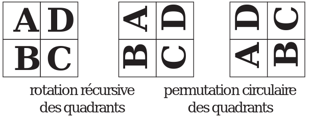

TP FAIRE TOMBER R2D2 - février 2023⚓︎
Le problème à résoudre⚓︎
On souhaite faire tomber R2D2 ! On peut remarquer qu'il s'agit en fait d'effectuer une rotation d'un quart de tour (ou 90°) d'une image carrée, par exemple de 512 pixels sur 512 pixels.

Principe - Algorithme⚓︎
Le principe de l’algorithme est illustré par la figure ci-dessous (où on effectue une rotation à gauche). Il suit les trois phases de l’approche « diviser pour régner »:
- Diviser : l’image est découpée en quatre zones, par exemple nommées A, B, C et D.
- Résoudre (régner): chaque zone est tournée de 90° par un appel récursif.
- Combiner : on place les zones tournées à leur emplacement final, en d'autres termes, on effectue une permutation circulaire des quatre zones.

Modéliser l'image comme un tableau de pixel⚓︎
1 2 3 4 5 6 | |
1 | |
1 | |
pix est une instance de la classe PixelAccess du module Image de la librairie PIL. Cet objet peut être vu comme un tableau de pixels. Ces derniers étant des n-uplets des composantes Rouge, Vert et Bleu. Pour modifier un pixel aux coordonées x, y on effectue l'affectation:
pix[x, y] = c où c est un triplet représentant une couleur.
1 2 | |
Résolution⚓︎
On suppose pour simplifer que l'image est carrée (t x t)où t est sa taille et correspond à une puissance de 2. La procédure de résolution est la suivante:
- on découpe l'image en 4 et on effectue récursivement une rotation de 90° (à droite pour R2D2) de chacun des 4 morceaux dont le coin supérieur gauche est situé respectivement aux coordonnées
(x, y),(x+t, y),(x, y+t)et(x+t, y+t); - on déplace chacun des morceaux précédent vers leur position finale (permutation circulaire dans le sens horaire).
On peut visualiser ces diverses opérations sur le schéma ci-dessous

La résolution s'appuiera essentiellement sur deux fonctions auxiliaires (dont on trouvera les signatures ci-dessous): rotation_aux et echanger_quadrant.
1 2 3 4 5 6 7 8 9 10 11 12 | |
1 2 3 4 5 6 7 8 9 10 11 | |
À faire
Après avoir compléter les deux fonctions auxiliaires ci-dessus, tester votre code en réalisant l'appel tomber_R2D2("img/R2D2.png").
1 2 3 4 5 6 7 8 9 10 11 12 13 14 15 16 | |
1 | |